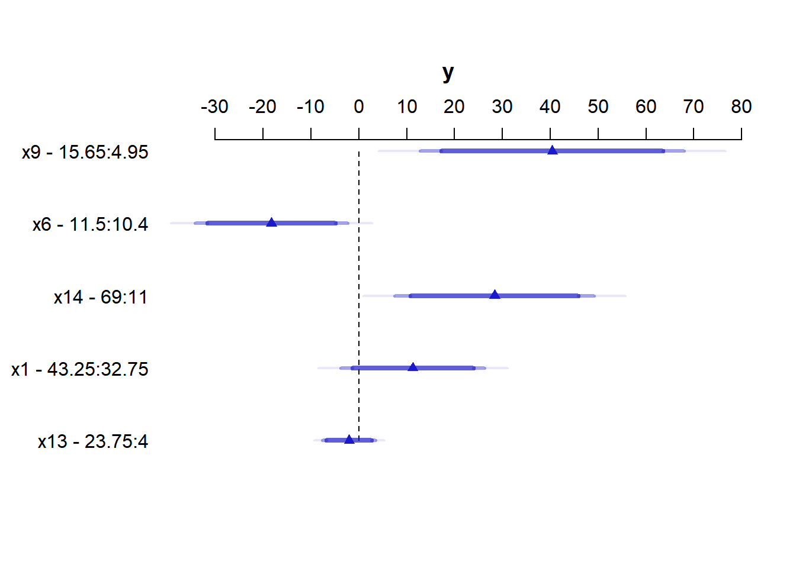
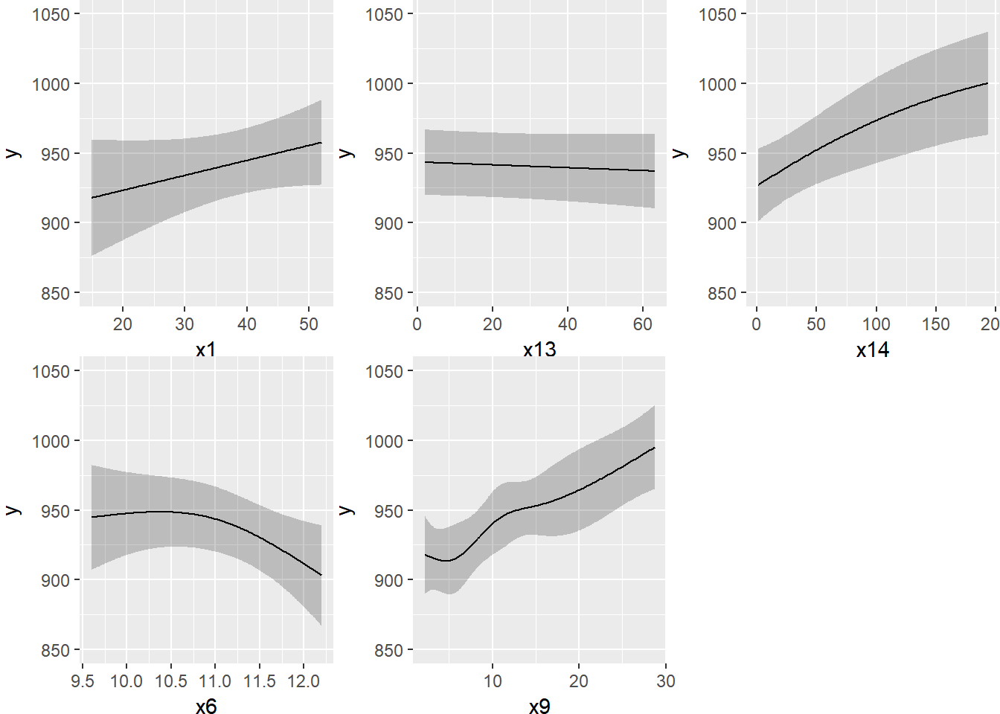
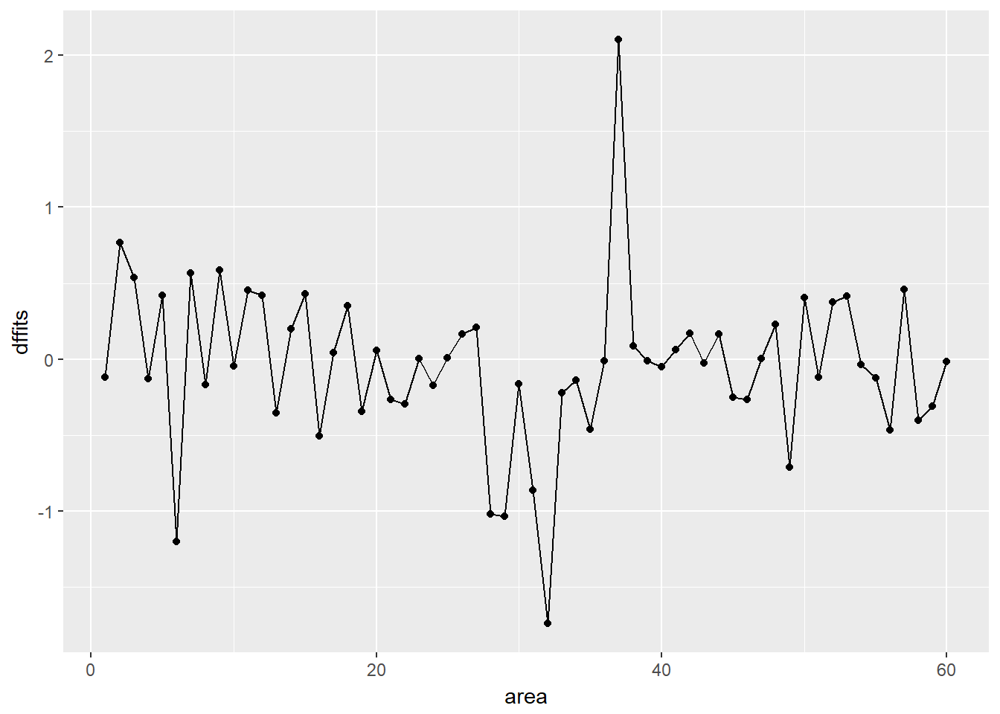
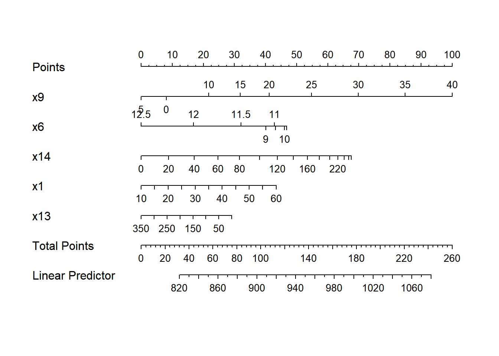

Chapter 10 Using ols from the rms package to fit linear models
At the end of the previous chapter, we had fit a model to the pollution data that predicted our outcome y = Age-Adjusted Mortality Rate, using:
- a restricted cubic spline with 5 knots on
x9 - a restricted cubic spline with 3 knots on
x6 - a polynomial in 2 degrees on
x14 - linear terms for
x1andx13
but this model was hard to evaluate in some ways. Now, instead of using lm to fit this model, we’ll use a new function called ols from the rms package developed by Frank Harrell and colleagues, in part to support ideas developed in Harrell (2001) for clinical prediction models.
10.1 Fitting a model with ols
We will use the datadist approach when fitting a linear model with ols from the rms package, so as to store additional important elements of the model fit.
library(rms)
d <- datadist(pollution)
options(datadist = "d")Next, we’ll fit the model using ols and place its results in newmod.
newmod <- ols(y ~ rcs(x9, 5) + rcs(x6, 3) + pol(x14, 2) +
x1 + x13,
data = pollution, x = TRUE, y = TRUE)
newmodLinear Regression Model
ols(formula = y ~ rcs(x9, 5) + rcs(x6, 3) + pol(x14, 2) + x1 +
x13, data = pollution, x = TRUE, y = TRUE)
Model Likelihood Discrimination
Ratio Test Indexes
Obs 60 LR chi2 72.02 R2 0.699
sigma37.4566 d.f. 10 R2 adj 0.637
d.f. 49 Pr(> chi2) 0.0000 g 58.961
Residuals
Min 1Q Median 3Q Max
-86.189 -18.554 -1.799 18.645 104.307
Coef S.E. t Pr(>|t|)
Intercept 796.2658 162.3269 4.91 <0.0001
x9 -2.6328 6.3504 -0.41 0.6803
x9' 121.4651 124.4827 0.98 0.3340
x9'' -219.8025 227.6775 -0.97 0.3391
x9''' 151.5700 171.3867 0.88 0.3808
x6 7.6817 15.5230 0.49 0.6229
x6' -29.4388 18.0531 -1.63 0.1094
x14 0.5652 0.2547 2.22 0.0311
x14^2 -0.0010 0.0010 -0.96 0.3407
x1 1.0717 0.7317 1.46 0.1494
x13 -0.1028 0.1443 -0.71 0.4796
Some of the advantages and disadvantages of fitting linear regression models with ols or lm will reveal themselves over time. For now, one advantage for ols is that the entire variance-covariance matrix is saved. Most of the time, there will be some value to considering both ols and lm approaches.
Most of this output should be familiar, but a few pieces are different.
10.1.1 The Model Likelihood Ratio Test
The Model Likelihood Ratio Test compares newmod to the null model with only an intercept term. It is a goodness-of-fit test that we’ll use in several types of model settings this semester.
- In many settings, the logarithm of the likelihood ratio, multiplied by -2, yields a value which can be compared to a \(\chi^2\) distribution. So here, the value 72.02 is -2(log likelihood), and is compared to a \(\chi^2\) distribution with 10 degrees of freedom. We reject the null hypothesis that
newmodis no better than the null model, and conclude instead that at least one of these predictors adds statistically significant value.- For
ols, interpret the model likelihood ratio test like the global (ANOVA) F test inlm. - The likelihood function is the probability of observing our data under the specified model.
- We can compare two nested models by evaluating the difference in their likelihood ratios and degrees of freedom, then comparing the result to a \(\chi^2\) distribution.
- For
10.1.2 The g statistic
The g statistic is new and is referred to as the g-index. it’s based on Gini’s mean difference and is purported to be a robust and highly efficient measure of variation.
- Here, g = 58.9, which implies that if you randomly select two of the 60 areas included in the model, the average difference in predicted
y(Age-Adjusted Mortality Rate) using this model will be 58.9.- Technically, g is Gini’s mean difference of the predicted values.
10.2 ANOVA for an ols model
One advantage of the ols approach is that when you apply an anova to it, it separates out the linear and non-linear components of restricted cubic splines and polynomial terms (as well as product terms, if your model includes them.)
anova(newmod) Analysis of Variance Response: y
Factor d.f. Partial SS MS F P
x9 4 35219.7647 8804.9412 6.28 0.0004
Nonlinear 3 1339.3081 446.4360 0.32 0.8121
x6 2 9367.6008 4683.8004 3.34 0.0437
Nonlinear 1 3730.7388 3730.7388 2.66 0.1094
x14 2 18679.6957 9339.8478 6.66 0.0028
Nonlinear 1 1298.7625 1298.7625 0.93 0.3407
x1 1 3009.1829 3009.1829 2.14 0.1494
x13 1 711.9108 711.9108 0.51 0.4796
TOTAL NONLINEAR 5 6656.1824 1331.2365 0.95 0.4582
REGRESSION 10 159563.8285 15956.3829 11.37 <.0001
ERROR 49 68746.8004 1402.9959 Unlike the anova approach in lm, in ols ANOVA, partial F tests are presented - each predictor is assessed as “last predictor in” much like the usual t tests in lm. In essence, the partial sums of squares and F tests here describe the marginal impact of removing each covariate from newmod.
We conclude that the non-linear parts of x9 and x6 and x14 combined don’t seem to add much value, but that overall, x9, x6 and x14 seem to be valuable. So it must be the linear parts of those variables within our model that are doing the lion’s share of the work.
10.3 Effect Estimates
A particularly useful thing to get out of the ols approach that is not as easily available in lm (without recoding or standardizing our predictors) is a summary of the effects of each predictor in an interesting scale.
summary(newmod) Effects Response : y
Factor Low High Diff. Effect S.E. Lower 0.95 Upper 0.95
x9 4.95 15.65 10.70 40.4060 14.0790 12.1120 68.6990
x6 10.40 11.50 1.10 -18.2930 8.1499 -34.6710 -1.9153
x14 11.00 69.00 58.00 28.3480 10.6480 6.9503 49.7460
x1 32.75 43.25 10.50 11.2520 7.6833 -4.1878 26.6930
x13 4.00 23.75 19.75 -2.0303 2.8502 -7.7579 3.6973 This “effects summary” shows the effect on y of moving from the 25th to the 75th percentile of each variable (along with a standard error and 95% confidence interval) while holding the other variable at the level specified at the bottom of the output.
The most useful way to look at this sort of analysis is often a plot.
plot(summary(newmod))
For x9 note from the summary above that the 25th percentile is 4.95 and the 75th is 15.65. Our conclusion is that the estimated effect of moving x9 from 4.95 to 15.65 is an increase of 40.4 on y, with a 95% CI of (12.1, 68.7).
For a categorical variable, the low level is shown first and then the high level.
The plot shows the point estimate (arrow head) and then the 90% (narrowest bar), 95% (middle bar) and 99% (widest bar in lightest color) confidence intervals for each predictor’s effect.
- It’s easier to distinguish this in the
x9plot than the one forx13. - Remember that what is being compared is the first value to the second value’s impact on the outcome, with other predictors held constant.
10.3.1 Simultaneous Confidence Intervals
These confidence intervals make no effort to deal with the multiple comparisons problem, but just fit individual 95% (or whatever level you choose) confidence intervals for each predictor. The natural alternative is to make an adjustment for multiple comparisons in fitting the confidence intervals, so that the set of (in this case, five - one for each predictor) confidence intervals for effect sizes has a family-wise 95% confidence level. You’ll note that the effect estimates and standard errors are unchanged from those shown above, but the confidence limits are a bit wider.
summary(newmod, conf.type=c('simultaneous')) Effects Response : y
Factor Low High Diff. Effect S.E. Lower 0.95 Upper 0.95
x9 4.95 15.65 10.70 40.4060 14.0790 3.12280 77.6890
x6 10.40 11.50 1.10 -18.2930 8.1499 -39.87400 3.2882
x14 11.00 69.00 58.00 28.3480 10.6480 0.15192 56.5440
x1 32.75 43.25 10.50 11.2520 7.6833 -9.09340 31.5980
x13 4.00 23.75 19.75 -2.0303 2.8502 -9.57760 5.5171 Remember that if you’re looking for the usual lm summary for an ols object, use summary.lm, and that the display function from arm does not recognize ols objects.
10.4 The Predict function for an ols model
The Predict function is very flexible, and can be used to produce individual or simultaneous confidence limits.
Predict(newmod, x9 = 12, x6 = 12, x14 = 40, x1 = 40, x13 = 20) # individual limits x9 x6 x14 x1 x13 yhat lower upper
1 12 12 40 40 20 923.0982 893.0984 953.098
Response variable (y): y
Limits are 0.95 confidence limitsPredict(newmod, x9 = 5:15) # individual limits x9 x6 x14 x1 x13 yhat lower upper
1 5 11.05 30 38 9 913.7392 889.4802 937.9983
2 6 11.05 30 38 9 916.3490 892.0082 940.6897
3 7 11.05 30 38 9 921.3093 898.9657 943.6529
4 8 11.05 30 38 9 927.6464 907.0355 948.2574
5 9 11.05 30 38 9 934.3853 913.3761 955.3946
6 10 11.05 30 38 9 940.5510 917.8371 963.2648
7 11 11.05 30 38 9 945.2225 921.9971 968.4479
8 12 11.05 30 38 9 948.2885 926.4576 970.1194
9 13 11.05 30 38 9 950.2608 930.3003 970.2213
10 14 11.05 30 38 9 951.6671 932.2370 971.0971
11 15 11.05 30 38 9 953.0342 932.1662 973.9021
Response variable (y): y
Adjust to: x6=11.05 x14=30 x1=38 x13=9
Limits are 0.95 confidence limitsPredict(newmod, x9 = 5:15, conf.type = 'simult') x9 x6 x14 x1 x13 yhat lower upper
1 5 11.05 30 38 9 913.7392 882.4311 945.0473
2 6 11.05 30 38 9 916.3490 884.9354 947.7625
3 7 11.05 30 38 9 921.3093 892.4733 950.1454
4 8 11.05 30 38 9 927.6464 901.0465 954.2464
5 9 11.05 30 38 9 934.3853 907.2713 961.4993
6 10 11.05 30 38 9 940.5510 911.2371 969.8649
7 11 11.05 30 38 9 945.2225 915.2484 975.1966
8 12 11.05 30 38 9 948.2885 920.1141 976.4629
9 13 11.05 30 38 9 950.2608 924.5003 976.0212
10 14 11.05 30 38 9 951.6671 926.5912 976.7430
11 15 11.05 30 38 9 953.0342 926.1025 979.9658
Response variable (y): y
Adjust to: x6=11.05 x14=30 x1=38 x13=9
Limits are 0.95 confidence limitsThe plot below shows the individual effects in newmod in five subpanels, using the default approach of displaying the same range of values as are seen in the data. Note that each panel shows point and interval estimates of the effects, and spot the straight lines in x1 and x13, the single bends in x14 and x6 and the wiggles in x9, corresponding to the amount of non-linearity specified in the model.
ggplot(Predict(newmod))
10.5 Checking Influence via dfbeta
For an ols object, we have several tools for looking at residuals. The most interesting to me is which.influence which is reliant on the notion of dfbeta.
- DFBETA is estimated for each observation in the data, and each coefficient in the model.
- The DFBETA is the difference in the estimated coefficient caused by deleting the observation, scaled by the coefficient’s standard error estimated with the observation deleted.
- The
which.influencecommand applied to anolsmodel produces a list of all of the predictors estimated by the model, including the intercept.- For each predictor, the command lists all observations (by row number) that, if removed from the model, would cause the estimated coefficient (the “beta”) for that predictor to change by at least some particular cutoff.
- The default is that the DFBETA for that predictor is 0.2 or more.
which.influence(newmod)$Intercept
[1] 2 11 28 32 37 49 59
$x9
[1] 2 3 6 9 31 35 49 57 58
$x6
[1] 2 11 15 28 32 37 50 56 59
$x14
[1] 2 6 7 12 13 16 32 37
$x1
[1] 7 18 32 37 49 57
$x13
[1] 29 32 37The implication here, for instance, is that if we drop row 3 from our data frame, and refit the model, this will have a meaningful impact on the estimate of x9 but not on the other coefficients. But if we drop, say, row 37, we will affect the estimates of the intercept, x6, x14, x1, and x13.
10.5.1 Using the residuals command for dfbetas
To see the dfbeta values, standardized according to the approach I used above, you can use the following code (I’ll use head to just show the first few rows of results) to get a matrix of the results.
head(residuals(newmod, type = "dfbetas")) [,1] [,2] [,3] [,4] [,5]
[1,] 0.03071160 -0.023775487 -0.004055111 0.01205425 -0.03260003
[2,] -0.38276573 -0.048404993 -0.142293606 0.17009666 -0.22350621
[3,] 0.17226780 -0.426153536 0.350913139 -0.32949129 0.25777913
[4,] 0.06175110 -0.006460916 0.024828272 -0.03009337 0.04154812
[5,] 0.16875200 0.039839994 -0.058178534 0.06449504 -0.07772208
[6,] 0.03322073 0.112699877 -0.203543632 0.23987378 -0.35201736
[,6] [,7] [,8] [,9] [,10]
[1,] -0.02392315 0.01175375 -0.06494414 0.060929683 -0.011042644
[2,] 0.44737372 -0.48562818 0.19372285 -0.212186731 -0.107830147
[3,] -0.10263448 0.05005284 -0.02049877 0.014059330 0.010793169
[4,] -0.06254145 0.05498432 0.01135031 -0.001877983 -0.005490454
[5,] -0.18058630 0.16151742 0.02723710 0.065483158 0.003326357
[6,] -0.04075617 0.02900006 -0.21508009 0.171627718 0.019241676
[,11]
[1,] 0.03425156
[2,] -0.01503250
[3,] 0.04924166
[4,] -0.01254111
[5,] -0.05570035
[6,] 0.0577553610.5.2 Using the residuals command for other summaries
The residuals command will also let you get ordinary residuals, leverage values and dffits values, which are the normalized differences in predicted values when observations are omitted. See ?residuals.ols for more details.
temp <- data.frame(area = 1:60)
temp$residual <- residuals(newmod, type = "ordinary")
temp$leverage <- residuals(newmod, type = "hat")
temp$dffits <- residuals(newmod, type = "dffits")
tbl_df(temp)# A tibble: 60 x 4
area residual leverage dffits
<int> <dbl> <dbl> <dbl>
1 1 -13.3 0.0929 -0.119
2 2 81.0 0.0941 0.766
3 3 28.8 0.266 0.539
4 4 -12.5 0.117 -0.128
5 5 27.8 0.204 0.419
6 6 -40.4 0.416 -1.20
7 7 37.0 0.207 0.568
8 8 -14.3 0.145 -0.169
9 9 66.6 0.0863 0.587
10 10 -4.96 0.0997 -0.0460
# ... with 50 more rowsggplot(temp, aes(x = area, y = dffits)) +
geom_point() +
geom_line()
It appears that point 37 has the largest (positive) dffits value. Recall that point 37 seemed influential on several predictors and the intercept term. Point 32 has the smallest (or largest negative) dffits, and also appears to have been influential on several predictors and the intercept.
which.max(temp$dffits)[1] 37which.min(temp$dffits)[1] 3210.6 Model Validation and Correcting for Optimism
In 431, we learned about splitting our regression models into training samples and test samples, performing variable selection work on the training sample to identify two or three candidate models (perhaps via a stepwise approach), and then comparing the predictions made by those models in a test sample.
At the final project presentations, I mentioned (to many folks) that there was a way to automate this process a bit in 432, that would provide some ways to get the machine to split the data for you multiple times, and then average over the results, using a bootstrap approach. This is it.
The validate function allows us to perform cross-validation of our models for some summary statistics (and then correct those statistics for optimism in describing likely predictive accuracy) in an easy way.
validate develops:
- Resampling validation with or without backward elimination of variables
- Estimates of the optimism in measures of predictive accuracy
- Estimates of the intercept and slope of a calibration model
with the following code…
set.seed(432002); validate(newmod, method = "boot", B = 40) index.orig training test optimism index.corrected n
R-square 0.6989 0.7500 0.5964 0.1536 0.5452 40
MSE 1145.7800 888.2564 1535.8277 -647.5714 1793.3514 40
g 58.9614 58.9323 55.2085 3.7238 55.2376 40
Intercept 0.0000 0.0000 86.5968 -86.5968 86.5968 40
Slope 1.0000 1.0000 0.9088 0.0912 0.9088 40So, for R-square we see that our original estimate was 0.6989
- Our estimated
R-squareacrossn= 40 training samples was 0.7500, but in the resulting tests, the averageR-squarewas only 0.5964 - This suggests an optimism of 0.7500 - 0.5964 = 0.1536 (after rounding).
- We then apply that optimism to obtain a new estimate of R2 corrected for overfitting, at 0.5452, which is probably a better estimate of what our results might look like in new data that were similar to (but not the same as) the data we used in building
newmodthan our initial estimate of 0.6989
We also obtain optimism-corrected estimates of the mean squared error (square of the residual standard deviation), the g index, and the intercept and slope of the calibration model. The “corrected” slope is a shrinkage factor that takes overfitting into account.
10.7 Building a Nomogram for Our Model
Another nice feature of an ols model object is that we can picture the model with a nomogram easily. Here is model newmod.
plot(nomogram(newmod))
For this model, we can use this plot to predict y as follows:
- find our values of
x9on the appropriate line - draw a vertical line up to the points line to count the points associated with our subject
- repeat the process to obtain the points associated with
x6,x14,x1, andx13. Sum the points. - draw a vertical line down from that number in the Total Points line to estimate
y(the Linear Predictor) = Age-Adjusted Mortality Rate.
The impact of the non-linearity is seen in the x6 results, for example, which turn around from 9-10 to 11-12. We also see non-linearity’s effects in the scales of the non-linear terms in terms of points awarded.
An area with a combination of predictor values leading to a total of 100 points, for instance, would lead to a prediction of a Mortality Rate near 905. An area with a total of 140 points would have a predicted Mortality Rate of 955, roughly.
References
Harrell, Frank E. 2001. Regression Modeling Strategies. New York: Springer.